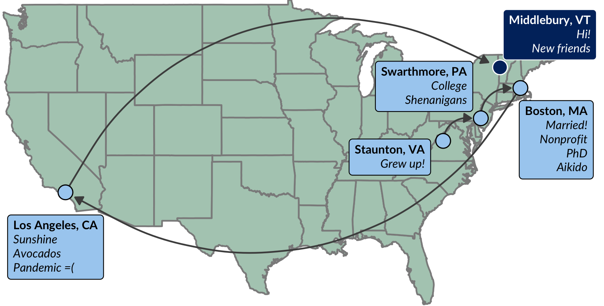

Personal
I’m Phil Chodrow, assistant professor of computer science here at Middlebury. My pronouns are he/him/his. I love data science, math, Star Trek: Deep Space Nine, cooking, tea, Studio Ghibli movies, traditional martial arts, and effective pedagogy. A few miscellaneous facts about me:
- I love aikido, a Japanese martial art focused on controlling conflict through locating personal strength and blending with the opponent. I have served as a junior aikido instructor at Harvard Aikikai, New England Aikikai, and Aikido Tekkojuku of Boston.
- I am a founder of NinjaGram at Swarthmore College. NinjaGram is a comic Valentine’s Day card delivery service / charity that persists at Swarthmore to this day.
- I ran into Magnus Carlsen, the current world champion of chess, on a boat near Stavanger, Norway. I have his autograph!
- While I lived in Norway, I did just a bit of skiing (cross-country and downhill). I’m eager to get back into skiing now that I again live in a beautiful snowy place!
Professional Journey
Before coming to Middlebury, I was a visiting assistant professor in the Department of Mathematics at UCLA, mentored by Mason Porter. I did my PhD at MIT’s Operations Research Center under the mentorship of Marta González and Patrick Jaillet. My research at MIT was supported by the NSF Graduate Research Fellowship. Prior to MIT, I was an undergraduate at Swarthmore College and a Fulbright Research Scholar at the University of Oslo, Norway. Here’s a visual representation of my journey (excluding Norway, which doesn’t fit well on the map):